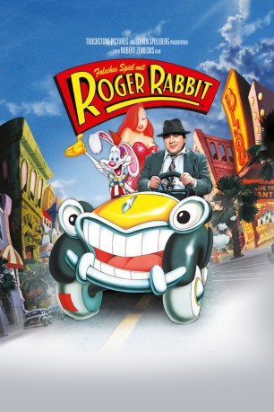

#4192 Falsches Spiel mit Roger Rabbit
Alternativ: Who Framed Roger Rabbit
Auszeichnungen: 4 Oscars gewonnen für 3 Oscars nominiert 1 BAFTA-Awards gewonnen
 
 IMDB-Wertung: 7.7 / 10
IMDB-Wertung: 7.7 / 10  Metascore: 0
Metascore: 0 
Roger Rabbit, einer der größten Stars Toontowns, wird gesucht: Er soll Marvin Acme ermordet haben, weil der angeblich ein Verhältnis mit Rogers Frau Jessica hatte. Richter Doom will ihn in seine berüchtigte “Suppe” stecken, das Einzige, was einen Toon töten kann. Roger fällt nichts anderes ein, als ausgerechnet den heruntergekommenen Privatdetektiv Eddie Valliant um Hilfe zu bitten, dessen Bruder von einem Toon getötet wurde. Seither hasst Valliant alle Zeichentrickfiguren, lässt sich aber doch dazu überreden, diesen Job anzunehmen.
Jahr: 1988
Dauer: 103 Minuten
FSK: 12
Land: USA Studio: Buena Vista PicturesTonspuren: DD5.1 - ,
Untertitel: Deutsch,
Auflösung: 1080p (1920x1040) Größe: 8949 MB
Genre: Animation/Trick, Abenteuer, Komödie, Krimi, Familie, Fantasy, Mystery
Regisseur:  Robert Zemeckis
Robert Zemeckis
Drehbuch: Ernst Marischka
Soundtrack:
Darsteller:
 Bob Hoskins als Eddie Valiant
Bob Hoskins als Eddie Valiant Christopher Lloyd als Judge Doom
Christopher Lloyd als Judge Doom Joanna Cassidy als Dolores
Joanna Cassidy als Dolores Charles Fleischer als Roger Rabbit / Benny The Cab / Greasy / Psycho
Charles Fleischer als Roger Rabbit / Benny The Cab / Greasy / Psycho Richard LeParmentier als Lt. Santino
Richard LeParmentier als Lt. Santino- Joel Silver als Raoul
 Richard Ridings als Angelo
Richard Ridings als Angelo- Mike Edmonds als Stretch
 April Winchell als Mrs. Herman
April Winchell als Mrs. Herman- Mae Questel als Betty Boop
 Mel Blanc als Daffy Duck / Tweety Bird / Bugs Bunny / Sylvester / Porky Pig
Mel Blanc als Daffy Duck / Tweety Bird / Bugs Bunny / Sylvester / Porky Pig Joe Alaskey als Yosemite Sam / Foghorn Leghorn
Joe Alaskey als Yosemite Sam / Foghorn Leghorn David L. Lander als Smart Ass
David L. Lander als Smart Ass June Foray als Wheezy / Lena Hyena
June Foray als Wheezy / Lena Hyena Russi Taylor als Birds / Minnie Mouse
Russi Taylor als Birds / Minnie Mouse- Les Perkins als Toad
 Wayne Allwine als Mickey Mouse
Wayne Allwine als Mickey Mouse Pat Buttram als Bullet #1
Pat Buttram als Bullet #1 Jim Cummings als Bullet #2
Jim Cummings als Bullet #2 Frank Sinatra als Singing Sword , archive sound
Frank Sinatra als Singing Sword , archive sound Jack Angel als Additional Voices , uncredited
Jack Angel als Additional Voices , uncredited- Jeff Arbaugh als Mime , uncredited
 Nancy Cartwright als Dipped Shoe , uncredited
Nancy Cartwright als Dipped Shoe , uncredited Bill Farmer als Goofy , uncredited
Bill Farmer als Goofy , uncredited Derek Lyons als Drunk in Bar , uncredited
Derek Lyons als Drunk in Bar , uncredited- Philip O'Brien als Earl, bar customer , uncredited
- Mikul Robins als Cloverleaf Billboard Raiser , uncredited
 Tina Simmons als Ink and Paint Club Patron , uncredited
Tina Simmons als Ink and Paint Club Patron , uncredited Kathleen Turner als Jessica Rabbit , uncredited
Kathleen Turner als Jessica Rabbit , uncredited Frank Welker als Dumbo / Additional Voices , uncredited
Frank Welker als Dumbo / Additional Voices , uncredited- Stubby Kaye als Marvin Acme
- Alan Tilvern als R.K. Maroon
- Lou Hirsch als Baby Herman
- Betsy Brantley als Jessica's Performance Model
- Paul Springer als Augie
- Edwin Craig als Arthritic Cowboy
- Lindsay Holiday als Soldier
- Morgan Deare als Editor / Gorilla
- Danny Capri als Kid #1
- Christopher Hollosy als Kid #2
- John-Paul Sipla als Kid #3
- Laura Frances als Blonde Starlet
- Joel Cutrara als Forensic #1
 Billy J. Mitchell als Forensic #2
Billy J. Mitchell als Forensic #2- Eric B. Sindon als Mailman
- Ed Herlihy als Newscaster
- James O'Connell als Conductor
- Eugene Gutierrez als Teddy Valiant
 Tony Anselmo als Donald Duck
Tony Anselmo als Donald Duck- Mary T. Radford als Hippo
Datei: X:\1988\Falsches Spiel mit Roger Rabbit (1988, FSK12, 1920x1040).mkv seit 29.07.2016
Festplatte: HD 1987-1991
 Es gibt insgesamt 66 Filme in der Gruppe '1988'
Es gibt insgesamt 66 Filme in der Gruppe '1988'